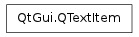

QTextItem ¶

Synopsis ¶
Detailed Description ¶
The PySide.QtGui.QTextItem class provides all the information required to draw text in a custom paint engine.
When you reimplement your own paint engine, you must reimplement QPaintEngine.drawTextItem() , a function that takes a PySide.QtGui.QTextItem as one of its arguments.
- class PySide.QtGui. QTextItem ¶
- PySide.QtGui.QTextItem. RenderFlag ¶
-
Constant Description QTextItem.RightToLeft Render the text from right to left. QTextItem.Overline Paint a line above the text. QTextItem.Underline Paint a line under the text. QTextItem.StrikeOut Paint a line through the text.
- PySide.QtGui.QTextItem. ascent ( ) ¶
-
Return type: PySide.QtCore.qreal Corresponds to the PySide.QtGui.QFontMetrics.ascent() of the piece of text that is drawn.
- PySide.QtGui.QTextItem. descent ( ) ¶
-
Return type: PySide.QtCore.qreal Corresponds to the PySide.QtGui.QFontMetrics.descent() of the piece of text that is drawn.
- PySide.QtGui.QTextItem. font ( ) ¶
-
Return type: PySide.QtGui.QFont Returns the font that should be used to draw the text.
- PySide.QtGui.QTextItem. renderFlags ( ) ¶
-
Return type: PySide.QtGui.QTextItem.RenderFlags Returns the render flags used.
- PySide.QtGui.QTextItem. text ( ) ¶
-
Return type: unicode Returns the text that should be drawn.
- PySide.QtGui.QTextItem. width ( ) ¶
-
Return type: PySide.QtCore.qreal Specifies the total width of the text to be drawn.